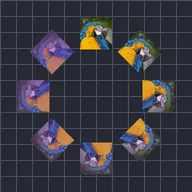

Ripetizione radiale

Genera dinamicamente più copie del livello disposte in cerchio.
Impostazioni
| Impostazione | Tipo | Intervallo | Predefinito |
|---|---|---|---|
| Numero | Numero | Da 0 a 150 | 8 |
| Raggio | Numero | Da 0 a 2000 | 300 |
| Orientamento | Angolo | Da -3600° a 3600° | 0° |
| Angolo | Angolo | Da -3600° a 3600° | 0° |
| Arco | Angolo | Da -3600° a 3600° | 360° |
| Scala | Numero | Da 0 a 10 | 1 |
| Posizione intervallo | Punto (X, Y) | Da -99999 a 99999 | 0, 0 |
| Scala intervallo | Numero | Da 0 a 10 | 1 |
| Rotazione intervallo | Angolo | Da -3600° a 3600° | 0° |
| Opacità intervallo | Numero | Da 0% a 100% | 100% |
| Colore riempimento | Colore | – | #FFFFFF |
| Quantità riempimento | Numero | Da 0% a 100% | 0% |
| Inizio intervallo | Numero | Da 0% a 100% | 0% |
| Fine intervallo | Numero | Da 0% a 100% | 100% |
| Scostamento intervallo | Numero | Da -1000% a 1000% | 0% |
| Easing | Scelta | Lineare, Accelerazione, Decelerazione, Accelerazione e decelerazione | Lineare |
| Ordine casuale | Attivo o disattivo | – | Disattivo |
| Seme | Numero | Da 0 a 9999 | 0 |
| Ritardo per copia | Numero | Da -60 s a 60 s | 0 s |
| Posizione casuale | Punto (X, Y) | Da 0 a 99999 | 0, 0 |
| Rotazione casuale | Angolo | Da 0° a 3600° | 0° |
| Scala casuale | Numero | Da 0% a 1000% | 0% |
| Opacità casuale | Numero | Da 0% a 100% | 0% |